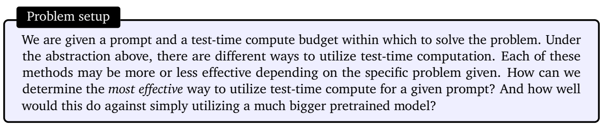

论文阅读二十：优化缩放LLM测试时间计算比缩放模型参数更有效
使LLM能够通过使用更多的测试时间计算来提高其输出，是构建可以在开放式自然语言上运行的一般自我改进代理的关键一步。本文研究了LLM中推理时间计算的缩放，重点回答了以下问题：如果允许LLM使用固定但非微不足道的推理时间计算，那么它在具有挑战性的提示下能提高多少性能？回答这个问题不仅对LLM的可实现性能有影响，而且对LLM预训练的未来以及如何权衡推理时间和预训练计算也有影响。尽管它很重要，但很少有研究试图了解各种测试时间推理方法的缩放行为。此外，目前的工作在很大程度上为其中一些策略提供了负面结果。在这项工作中，我们分析了两种主要的机制来扩展测试时间计算：（1）针对密集的、基于过程的验证者奖励模型进行搜索；以及（2）在测试时给出提示的情况下自适应地更新模型在响应上的分布。我们发现，在这两种情况下，缩放测试时间计算的不同方法的有效性因提示的难度而异。这一观察结果促使应用 "计算最优"缩放策略，该策略可以最有效地为每个提示自适应地分配测试时间计算。使用这种计算优化策略，与最佳N基线相比，我们可以将测试时间计算缩放的效率提高4倍以上。此外，在FLOP匹配评估中，我们发现，在较小的基础模型达到一定成功率的问题上，测试时间计算可用于优于14倍大的模型。
引言
人类倾向于在难题上思考更长时间，以可靠地改进他们的决策[9,17,18]。我们能否在当今的大型语言模型（LLM）中灌输类似的能力？更具体地说，给定一个具有挑战性的输入查询，我们能否使语言模型在测试时最有效地利用额外的计算，以提高其响应的准确性？理论上，通过在测试时应用额外的计算，LLM应该能够比它被训练做的更好。此外，测试时的这种能力也有可能在代理和推理任务中开辟新的途径[28,34,47]。例如，如果在推理过程中可以用预先训练的模型大小来换取额外的计算，这将在可以使用较小的设备上模型来代替数据中心规模的LLM的用例中实现LLM部署。通过使用额外的推理时间计算来自动生成改进的模型输出，也为实现一种通用的自我改进算法提供了一条途径，该算法可以在减少人为监督的情况下运行。
先前研究推理时间计算的工作提供了喜忧参半的结果。一方面，一些研究表明，当前的LLM可以使用测试时间计算来提高其输出[4,8,23,30,48]，另一方面，其他研究表明，这些方法在数学推理等更复杂任务上的有效性仍然非常有限[15,37,43]，尽管推理问题通常需要对现有知识而不是新知识进行推理。这些相互矛盾的发现促使我们需要对缩放测试时间计算的不同方法进行系统分析。
我们有兴趣了解扩大测试时间计算的好处。可以说，缩放测试时间计算最简单、研究最深入的方法是N中选优抽样：从基础LLM中“并行”抽样N个输出，并根据学习到的验证器或奖励模型选择得分最高的输出[7,22]。然而，这种方法并不是使用测试时间计算来改进LLM的唯一方法。通过修改从中获得响应的提案分布（例如，要求基础模型“顺序”修改其原始响应[28]）或改变验证器的使用方式（例如，通过训练基于过程的密集验证器[22,45]并针对该验证器进行搜索），能力量表测试时间计算可以大大提高，正如我们在论文中所示。
为了了解扩大测试时间计算的好处，我们使用专门微调的PaLM-2[3]模型对具有挑战性的MATH[13]基准进行了实验，以修改错误答案[28]（例如改进提案分发；第6节）或使用基于过程的奖励模型（PRM）验证答案中各个步骤的正确性[22,45]（第5节）。通过这两种方法，我们发现特定测试时间计算策略的有效性在很大程度上取决于手头特定问题的性质和使用的基础LLM。例如，对于更容易的问题，基础LLM已经可以很容易地产生合理的响应，允许模型通过预测N个修订序列（即修改提案分布）迭代地改进其初始答案，这可能是比并行采样N个独立响应更有效的测试时间计算方法。另一方面，对于可能需要搜索许多不同高级方法来解决问题的更困难的问题，并行独立重新采样新响应或针对基于过程的奖励模型部署树搜索可能是使用测试时间计算的更有效方法。这一发现表明，需要部署一种自适应的“计算最优”策略来扩展测试时间计算，其中根据提示选择利用测试时间计算的具体方法，以充分利用额外的计算。我们还表明，从基础LLM的角度来看，问题难度的概念（第4节）可用于预测测试时间计算的有效性，使我们能够在给出提示的情况下实际实例化这种“计算最优”策略。通过以这种方式适当地分配测试时间计算，我们能够大大提高测试时间计算的可扩展性，超越最佳N基线的性能，同时仅使用约4倍的计算，包括修订和搜索（第5节和第6节）。
使用我们改进的测试时间计算缩放策略，我们的目标是了解测试时间计算在多大程度上可以有效地替代额外的预训练。我们在具有额外测试时间计算的较小模型和预训练14倍大的模型之间进行了FLOP匹配比较。我们发现，在简单和中等的问题上，甚至在困难的问题上（取决于预训练和推理工作量的具体情况），额外的测试时间计算通常比缩放预训练更可取。这一发现表明，与其纯粹关注缩放预训练，在某些情况下，用较少的计算预训练较小的模型更有效，然后应用测试时间计算来提高模型输出。也就是说，对于最具挑战性的问题，我们观察到扩大测试时间计算的好处很小。相反，我们发现，在这些问题上，通过应用额外的预训练计算来取得进展更为有效，这表明目前缩放测试时间计算的方法可能无法与缩放预训练一一交换。总的来说，这表明，即使采用相当天真的方法，扩大测试时间计算也可能比扩大预训练更可取，随着测试时间策略的成熟，只会有更多的改进。从长远来看，这暗示着未来在预训练期间花费更少的FLOP，而在推理中花费更多的FLOP。
测试时间计算的统一视角：提出者和验证者
我们首先统一了使用测试时间计算的方法，然后分析了一些具有代表性的方法。首先，我们通过在给定提示的条件下在测试时间自适应地修改模型的预测分布来看待额外测试时间计算的使用。理想情况下，测试时间计算应该修改分布，以便产生比从LLM本身进行天真采样更好的输出。一般来说，有两个旋钮可以诱导对LLM分布的修改：（1）在输入级别：通过用LLM附加的一组令牌来增强给定的提示，以获得修改后的分布，或者 （2）在输出级别：从标准LM中采样多个候选者并对这些候选者进行手术。换句话说，我们可以修改LLM本身引起的提案分布，使其比天真地以提示为条件有所改进，或者我们可以使用一些事后验证器或评分器来执行输出修改。这个过程让人联想到马尔可夫链蒙特卡洛（MCMC）[2]从复杂的目标分布中采样，但结合了简单的建议分布和评分函数。通过改变输入令牌和使用验证器直接修改提案分布，形成了我们研究的两个独立轴。
修改提案分发。改进提案分发的一种方法是通过受RL启发的微调方法（如STaR或ReSTEM）直接优化给定推理任务的模型[35,50]。请注意，这些技术不使用任何额外的输入令牌，而是专门对模型进行微调，以改进提案分发。相反，自我批评[4,8,23,30]等技术使模型本身能够在测试时通过指示它以迭代的方式批评和修改自己的输出来改进自己的提案分发。由于提示现成的模型在测试时无法有效地进行有效的修订，我们专门对模型进行微调，以便在复杂的基于推理的设置中迭代修订其答案。为此，我们利用对政策数据进行微调的方法，在Best-of-N的指导下对模型响应进行改进[28]。
优化验证器。在我们对提案分布和验证器的抽象中，验证器用于从提案分布中聚合或选择最佳答案。使用这种验证器的最规范的方法是应用N优抽样，其中我们对N个完整解进行抽样，然后根据验证器选择最佳解[7]。然而，这种方法可以通过训练基于过程的验证器[22]或过程奖励模型（PRM）来进一步改进，该模型可以预测解决方案中每个中间步骤的正确性，而不仅仅是最终答案。然后，我们可以利用这些每一步的预测在解的空间上执行树搜索，与天真的N的最佳结果相比，这可能是一种更高效和有效的方法来搜索验证者[6,10,48]。
如何优化扩展测试时间计算
鉴于各种方法的统一，我们现在想了解如何最有效地利用测试时间计算来提高给定提示下的LM性能。具体来说，我们想回答：
